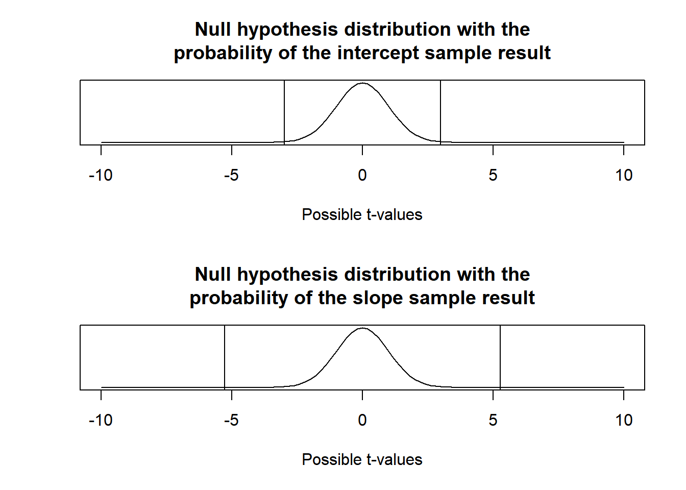
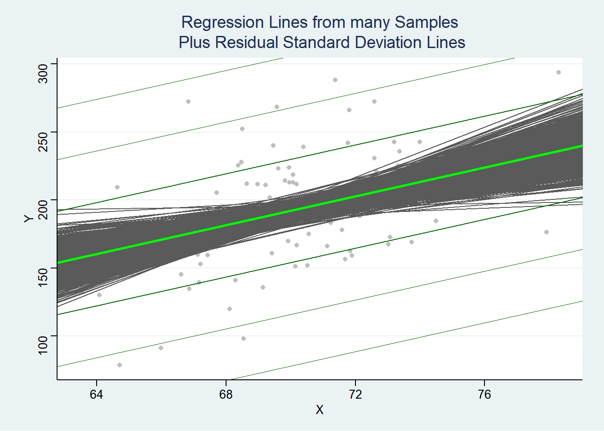
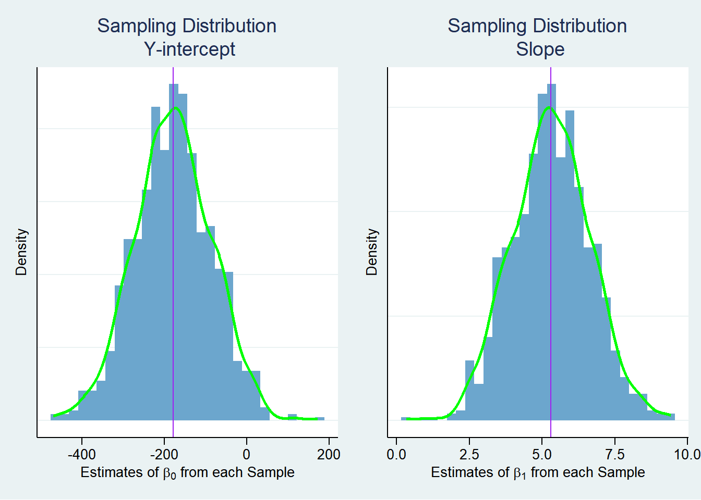
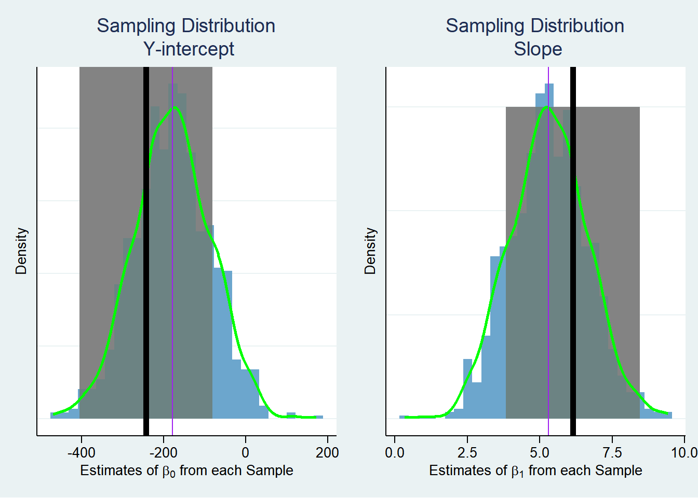

Code
library(tidyverse)
library(plotly)library(tidyverse)
library(plotly)Below we set up hypothetical population parameters.
Population parameters
Simulation variables
n = 100 #sample size
beta_0 = -179 #true y-intercept
beta_1 = 5.3 #true slope
sigma = 38 #choice of st. deviation of error terms
X = rnorm(n, mean = 70, sd = 3)
N <- 1000 #number of samples in our sampling distributionWe are going under the assumption we do not know the population parameters. Because of this, we are going to formulate hypotheses about the relationship between height (our independent variable) and weight (our dependent variable). The first pair of hypotheses state that when American male height is 0, weight should be 0 as well- The second pair of hypotheses state that when American male height increases by 1 inch, there is no increase in weight.
\[ \left.\begin{array}{ll} H_0: \beta_1 = 0 \\ H_a: \beta_1 \neq 0 \end{array} \right\} \ \text{Slope Hypotheses}\\\;\\\; \left.\begin{array}{ll} H_0: \beta_0 = 0 \\ H_a: \beta_0 \neq 0 \end{array} \right\} \ \text{Intercept Hypotheses} \]
We are going to go with the traditional \(\alpha = 0.05\).
alpha = 0.05For this mock study, we are going to “measure” the heights and weights of 100 random men in the United States.
First few rows of the mock sample data
X_sample <- rnorm(n, mean = 70, sd = 3)
Y_sample <- beta_0 + beta_1*X_sample + rnorm(n, 0, sigma)
sample = tibble(X_sample, Y_sample)
sample %>% head() %>% pander::pander()| X_sample | Y_sample |
|---|---|
| 73.95 | 184.3 |
| 71.08 | 241.9 |
| 71.6 | 341.4 |
| 74.43 | 228.2 |
| 70.95 | 226 |
| 68.21 | 129.7 |
The mock sample data
(ggplot(sample, aes(X_sample,Y_sample)) +
geom_point(color = 'darkblue',
fill='lightblue',
size=2.5,
shape=21,
alpha=.9) +
geom_smooth(se=F, method = 'lm') +
theme_classic() +
labs(
x = "Sample Height",
y = "Sample Weight",
title = "Weight by height among American men"
)) %>%
ggplotly()The summary of a linear model on the single mock data
mylm = lm(Y_sample~X_sample, data=sample)
b = mylm$coef
tibble(Intercept = b[1], Slope = b[2]) %>% pander::pander()| Intercept | Slope |
|---|---|
| -243.5 | 6.135 |
b0 = b[1]
b1 = b[2]We are going to estimate the distribution of all possible sample test statistics that someone could get from the population distribution assuming the null hypothesis is true. This allows us to see, under the null hypothesis, see how likely we are to get a sample as or more extreme than what we would ideally expect.
Calculating \(s_{b_0}\) and \(s_{b_1}\)
n = 100
mse = sum((sample$Y_sample - mylm$fitted.values)^2) / n
s_b0 = sqrt(mse*((1 / n) + (mean(sample$X_sample)^2 / sum((sample$X_sample - mean(sample$X_sample))^2))))
s_b1 = sqrt(mse/sum((sample$X_sample - mean(sample$X_sample))^2))
pander::pander(paste("$s_{b_0}$ is",s_b0 %>% round(2), "and $s_{b_1}$ is",s_b1 %>% round(2)))\(s_{b_0}\) is 81.66 and \(s_{b_1}\) is 1.16
Calculating the t-value for \(\beta_0\) and \(\beta_1\)
t_b0 = (b0 - 0)/s_b0
t_b1 = (b1 - 0)/s_b1
pander::pander(paste("the t-value for $b_0$ is",t_b0 %>% round(2), "the t-value for $b_1$ is",t_b1 %>% round(2)))the t-value for \(b_0\) is -2.98 the t-value for \(b_1\) is 5.27
Calculate the p-value for the Y intercept hypothesis and the slope hypothesis
p_b0 = pt(-abs(t_b0), n-2)*2
p_b1 = pt(-abs(t_b1), n-2)*2
pander::pander(paste("the p-value for $b_0$ is",p_b0 %>% round(2), "the p-value for $b_1$ is",p_b1 %>% round(2)))the p-value for \(b_0\) is 0 the p-value for \(b_1\) is 0
reject_null_b0 = (p_b0 <= alpha)
reject_null_b1 = (p_b1 <= alpha)
pander::pander(paste("The P-value for the Y-intercept hypothesis is",p_b0 %>% round(6),"."))The P-value for the Y-intercept hypothesis is 0.003622 .
pander::pander(paste("Since it is",reject_null_b0 %>% tolower(),"that (p<a), we",ifelse(reject_null_b0,"","fail to"),"reject the null hypothesis"))Since it is true that (p<a), we reject the null hypothesis
pander::pander(paste("The P-value for the slope hypothesis is",p_b1 %>% round(6),"."))The P-value for the slope hypothesis is 1e-06 .
pander::pander(paste("Since it is",reject_null_b1 %>% tolower(),"that (p<a), we",ifelse(reject_null_b1,"","fail to"),"reject the null hypothesis"))Since it is true that (p<a), we reject the null hypothesis
Here is the R calculated code from the sample.
mylm %>% summary %>% pander::pander()| Estimate | Std. Error | t value | Pr(>|t|) | |
|---|---|---|---|---|
| (Intercept) | -243.5 | 82.49 | -2.951 | 0.00396 |
| X_sample | 6.135 | 1.175 | 5.221 | 9.981e-07 |
| Observations | Residual Std. Error | \(R^2\) | Adjusted \(R^2\) |
|---|---|---|---|
| 100 | 36.13 | 0.2176 | 0.2096 |
The probability of picking a sample as extreme or more extreme given the null hypothesis is visualized below as the area under the curve except for the middle section.
par(mfrow=c(2,1))
curve(dt(x, df=n-1), from=-10, to=10, main="Null hypothesis distribution with the\nprobability of the intercept sample result", ylab="", xlab="Possible t-values", yaxt="n")
abline(v=c(abs(t_b0), -abs(t_b0)))
curve(dt(x, df=n-1), from=-10, to=10, main="Null hypothesis distribution with the\nprobability of the slope sample result", ylab="", xlab="Possible t-values", yaxt="n")
abline(v=c(abs(t_b1), -abs(t_b1)))
In the steps above, we estimate what it would be like if we were to take many samples using an estimated sample distribution of both intercepts and slopes. Below, using the population parameters defined above, 1000 samples will be taken of Americans in which an actual sampling distribution will be constructed.
Results from 1000 samples
Below is the result of overlaying every proposed line from each of the 1000 samples.
simulations <- tibble(
b0 = rep(NA, N),
b1 = rep(NA, N),
rmse = rep(NA, N)
)
for (i in 1:N) {
Y <- beta_0 + beta_1*X + rnorm(n, 0, sigma) #Sample Y from true model
mylm <- lm(Y ~ X)
simulations$b0[i] <- coef(mylm)[1]
simulations$b1[i] <- coef(mylm)[2]
simulations$rmse[i] <- summary(mylm)$sigma
}
data <- tibble(X = X, Y = Y)(ggplot(data, aes(X, Y)) +
geom_point(color = "gray") +
geom_abline(aes(intercept = b0, slope = b1), data = simulations, color = "#5A5A5A") +
geom_abline(intercept = beta_0, slope = beta_1, color = "green", size = 1) +
geom_abline(intercept = beta_0 + sigma, slope = beta_1, color = "darkgreen", size = 0.5) +
geom_abline(intercept = beta_0 - sigma, slope = beta_1, color = "darkgreen", size = 0.5) +
geom_abline(intercept = beta_0 + 2 * sigma, slope = beta_1, color = "darkgreen", size = 0.25) +
geom_abline(intercept = beta_0 - 2 * sigma, slope = beta_1, color = "darkgreen", size = 0.25) +
geom_abline(intercept = beta_0 + 3 * sigma, slope = beta_1, color = "darkgreen", size = 0.1) +
geom_abline(intercept = beta_0 - 3 * sigma, slope = beta_1, color = "darkgreen", size = 0.1) +
labs(title = "Regression Lines from many Samples\n Plus Residual Standard Deviation Lines",
x = "X",
y = "Y") +
ggthemes::theme_stata())
Below is the histogram of the combined samples to make a sampling distribution of intercepts on the left and slopes on the right. Notice from the above graph and below distribution that the slope intercept has very large variation due to the increased variation since the data is centered away from the intercept.
b0_samples = (ggplot(simulations, aes(x = b0)) +
geom_histogram(aes(y = ..density..), fill = "skyblue3", bins = 30) +
geom_density(color = "green", size = 1) +
labs(title = "Sampling Distribution\n Y-intercept",
x = expression(paste("Estimates of ", beta[0], " from each Sample")),
y = "Density") +
ggthemes::theme_stata() +
theme(axis.text.y=element_blank(),
axis.ticks.y=element_blank()) +
geom_vline(xintercept = beta_0, color='purple'))
b1_samples = (ggplot(simulations, aes(x = b1)) +
geom_histogram(aes(y = ..density..), fill = "skyblue3", bins = 30) +
geom_density(color = "green", size = 1) +
labs(title = "Sampling Distribution\n Slope",
x = expression(paste("Estimates of ", beta[1], " from each Sample")),
y = "Density") +
ggthemes::theme_stata() +
theme(axis.text.y=element_blank(),
axis.ticks.y=element_blank()) +
geom_vline(xintercept = beta_1, color='purple'))
gridExtra::grid.arrange(b0_samples , b1_samples, ncol = 2)
Results from the sampling distribution
pander::pander(paste("The mean of the sampling distribution for the Y-intercept turned out to be", simulations$b0 %>% mean %>% round(2),". Our estimate was",b0 %>% round(2)))The mean of the sampling distribution for the Y-intercept turned out to be -179 . Our estimate was -243.45
pander::pander(paste("The mean of the sampling distribution for the slope turned out to be", simulations$b1 %>% mean %>% round(2),". Our estimate was",b1 %>% round(2)))The mean of the sampling distribution for the slope turned out to be 5.3 . Our estimate was 6.14
pander::pander(paste("The variance of the sampling distribution for the Y-intercept turned out to be", simulations$b0 %>% sd %>% round(2),". Our estimate was",s_b0 %>% round(2)))The variance of the sampling distribution for the Y-intercept turned out to be 93.63 . Our estimate was 81.66
pander::pander(paste("The variance of the sampling distribution for the slope turned out to be", simulations$b1 %>% sd %>% round(2),". Our estimate was",s_b1 %>% round(2)))The variance of the sampling distribution for the slope turned out to be 1.34 . Our estimate was 1.16
We can directly visualize the 95 percent confidence interval with the visualization below. The purple line represents the true population parameter. The black line represents the sample estimation. The gray transparent box represents the 95 percent confidence interval.
Note: The visualization below may be a bit misleading since the 95 percent confidence interval does not represent the sample below, but the percentage of all samples.
tstar = qt(0.975, n-2)
ci_b0upper = b0 + tstar*s_b0
ci_b0lower = b0 - tstar*s_b0
ci_b1upper = b1 + tstar*s_b1
ci_b1lower = b1 - tstar*s_b1b0_samples_conf = (ggplot(simulations, aes(x = b0)) +
geom_histogram(aes(y = ..density..), fill = "skyblue3", bins = 30) +
geom_rect(xmin = ci_b0lower, xmax = ci_b0upper, ymin=0, ymax=.3, alpha=.01) +
geom_density(color = "green", size = 1) +
labs(title = "Sampling Distribution\n Y-intercept",
x = expression(paste("Estimates of ", beta[0], " from each Sample")),
y = "Density") +
ggthemes::theme_stata() +
theme(axis.text.y=element_blank(),
axis.ticks.y=element_blank()) +
geom_vline(xintercept = beta_0, color='purple') +
geom_vline(xintercept = b0, color='black', size=2)
)
b1_samples_conf = (ggplot(simulations, aes(x = b1)) +
geom_histogram(aes(y = ..density..), fill = "skyblue3", bins = 30) +
geom_rect(xmin = ci_b1lower, xmax = ci_b1upper, ymin=0, ymax=.3, alpha=.01) +
geom_density(color = "green", size = 1) +
labs(title = "Sampling Distribution\n Slope",
x = expression(paste("Estimates of ", beta[1], " from each Sample")),
y = "Density") +
ggthemes::theme_stata() +
theme(axis.text.y=element_blank(),
axis.ticks.y=element_blank()) +
geom_vline(xintercept = beta_1, color='purple') +
geom_vline(xintercept = b1, color='black', size=2))
gridExtra::grid.arrange(b0_samples_conf , b1_samples_conf, ncol = 2)